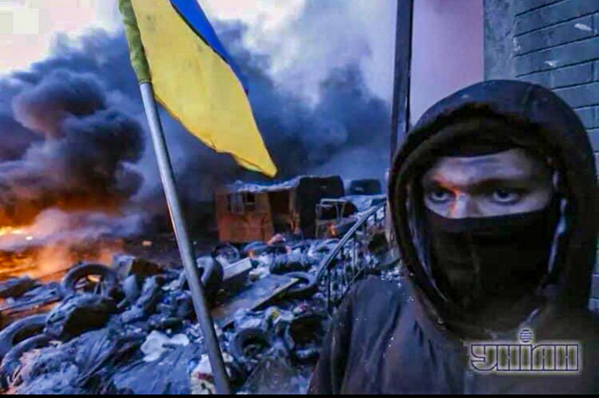
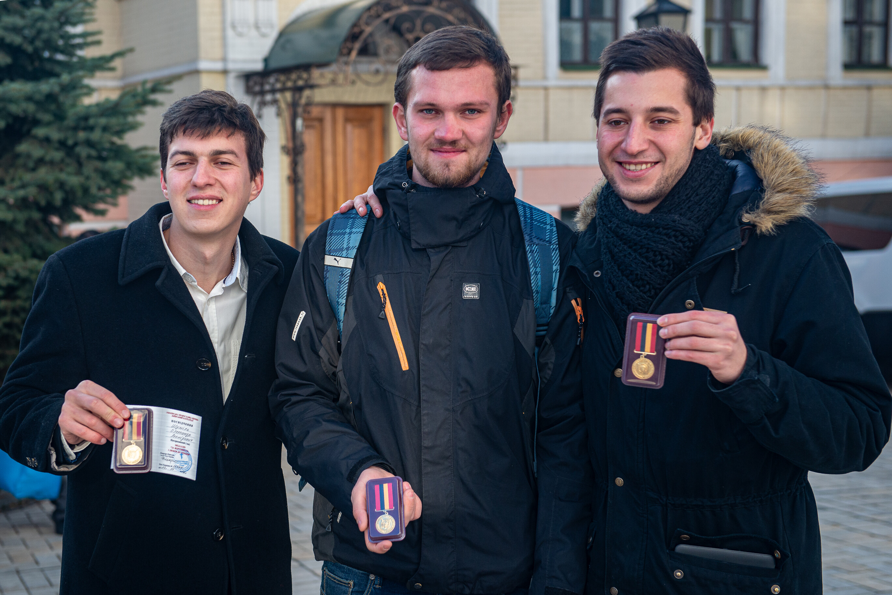
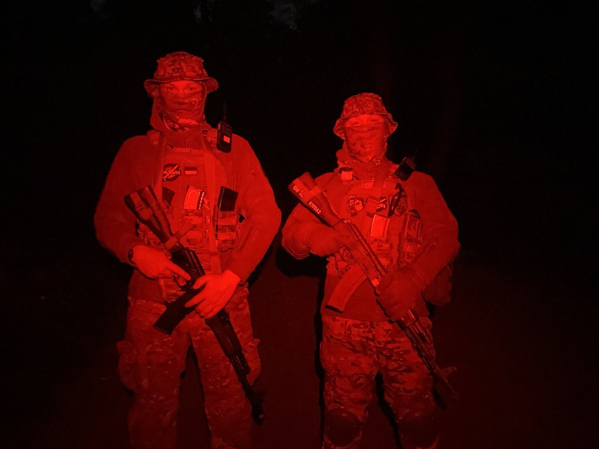

Текст-спогад пам'яті військового Ігоря Утюжа, який загинув 7 грудня 2023 року. Матеріал написано на основі розповіді з родиною Ігоря: батьків — Олега й Ніни Утюж, а також нареченої — Євгенії Шклярук.
У дитинстві Ігор був непосидючим та активним. Такий собі розбишака (у хорошому сенсі) із палаючими очима та вірою, що немає нічого неможливого. Він завжди шукав пригод і з юних років гартував характер — у розкладі з'являлися то карате, то джиу-джитсу, то академічна гребля.
З віком до активності додався залізний характер та впертість. А ще — любов до людей. Ігоря можна неофіційно назвати майстром спорту з налагодження контактів. У його виконанні це було мистецтво: кілька слів, посмішка — і Ігор уже «своя людина», добрий товариш, з яким можна у вогонь і воду.

Після школи Ігор самостійно вступив на бюджет у Київський політехнічний інститут. І саме на першому курсі, коли хлопцю було 17 років, стався переломний момент — розпочалася Революція Гідності. Вона сформувала Ігоря як громадянина країни, викристалізувала його ціннісні орієнтири.
Ігор перебував у 24-й сотні оборонців Майдану — і вже тоді дізнався, що таке боротися за своє. Юнаку не було і 18 років, коли Революція Гідності стала частиною його життя: він патрулював Майдан, стояв на барикадах, брав участь у протистояннях із «тітушками» та беркутом, витягував із рук силовиків тих, кого намагалися схопити.

Запеклі дні на Грушевського Ігор пройшов у передовиках — отримав кілька поранень гумовими кулями та отруєння газом. Батьки згадують події Майдану зі страхом і гордістю: під час протистоянь на Грушевського виникла пожежа в одному з магазинів. Тоді Ігор з власної ініціативи взяв український прапор і пішов на переговори із силовиками, аби ті пропустили пожежні машини. На барикадах на той момент оголосили тишу. Сміливий, переконливий і тоді ще такий юний, Ігор повернувся з прапором у руках, з пожежниками — і своєю першою перемогою.
Події 2014 року розвинули в Ігоря загострене відчуття справедливості, вірності принципам. Надалі саме ці риси стануть для хлопця дороговказом і лежатимуть в основі будь-якого вибору в житті.
Упертість, чесність, сміливість, завзятість — це ті риси, які першими спадають на думку, коли згадуємо Ігоря. Це була, у першу чергу, Людина. Ціннісна, глибока, заповзята. Саме тому він скрізь був першим, рухався назустріч небезпеці, а не тікав від неї — на Майдані у 2014, під час повномасштабного вторгнення у 2022. Між цими двома подіями — 8 років. А чесноти, які рухали Ігорем, лишалися незмінними.
Під час Революції Гідності 18 лютого 2014 року Ігор отримав тяжке поранення біля Маріїнського парку. Це сталося під час сутички беззбройних людей із беркутом. Тривалий час хлопцю не надавали медичну допомогу — нападники утримували його на місці побиття у стані між життям і смертю. До лікарні Ігоря вдалося забрати Ірині Геращенко з колегами.
Лікарі провели кілька термінових операцій: Ігор був у критичному стані — частина черепа була роздроблена. Врешті довелося встановити титанову пластину і пройти тривалий курс реабілітації. Тоді, після одужання, Ігор сказав батькам фразу, яка визначила все подальше:

Попри серйозну травму, отриману на Майдані, уже за кілька років Ігор долучився до АТО: пройшов спеціальну підготовку та виконував задачі з оборони другої лінії. У 2016 році, у віці 20 років, отримав медаль «За жертовність та любов до України».
За 3–4 місяці до повномасштабного вторгнення Ігор відчував наближення великої боротьби. І вже тоді знав, що ця боротьба буде його особистою. Тому ще восени 2021-го він сказав рідним: «Якщо це станеться, я буду там, я піду». Ігор не лишав простору для сумнівів чи вагань. Як і всі його рішення по життю, бажання захищати країну було непохитним.
Ігор зустрів новину про повномасштабне вторгнення росіян, святкуючи з дівчиною річницю знайомства у Будапешті. Ранок 24 лютого почався з двох фраз: Війна почалася! Я повертаюся додому!
Перші два місяці у Ігоря була легенда: аби рідні не хвилювалися, він переконував їх, що волонтерить по місту, — хоча сам одразу ж долучився до оборони Києва у лавах АЛЬФИ. А з часом, після деокупації Київщини, Ігор став частиною 78-го окремого десантно-штурмового полку. Проте тривалий час — неофіційно. Певна бюрократія навіть в умовах повномасштабної війни гальмувала процес офіційного долучення хлопця до лав ДШВ.
Дзвінки з передової батькам супроводжувалися фразами: «Мамо, я далеко, я не на передовій! Все добре». Це був обман задля турботи — Ігор знав, як сильно хвилюються рідні.
Для побратимів Ігор був «Слоном» — саме такий позивний мав хлопець. Бо кремезний — зростом 1,95 метра, з 46 розміром ноги і широчезними плечима, за якими можна сховати маленький світ. Ігор дуже любив слонів. У шкільні роки ділився з батьком:
Слони, до речі, належать до найрозумніших тварин. Їхньою унікальною відмінністю від багатьох інших ссавців є взаємодопомога: вони ніколи не кидають своїх і завжди тримаються групи. Ця риса була притаманна й Ігорю — не кинути своїх і триматися зграї, один за одного, у єдиному дусі. Друзі, побратими — це була друга родина, якою він пишався. На похорони Ігоря всі прийшли зі слонами: могила захисника була засипана кольоровими іграшками.

Євгенія — кохана Ігоря — пригадує, що з часом війна і життя стали чимось єдиним. Ігор міг дзвонити просто з окопів, а її хвилювало, чому він без шапки чи без шолома. Такі прості прояви турботи й любові, за які трималися дві роз'єднані душі. І коли тут, у Києві, її серце стискалося від хвилювання, від Ігоря було переконливе «та не хвилюйся, від нас до них — 100 метрів, он аж де прилітає». У нього завжди все було «ок», він ніколи не скаржився, не шукав винних (крім росіян, звичайно), і виконував свою місію натхненно — навіть якщо йшлося про збір збитих дронів на мінному полі.
Останнє повідомлення, яке написав Ігор перед загибеллю, було впевненим і життєствердним: «Ранок починається не з кави, а з мертвих орків…»
Командир Ігоря хотів бачити його у штабі. Там, казав, потрібні його знання і навички. Але Ігор був непохитним, він хотів бути з хлопцями попереду:
Ігор намагався бути з родиною максимально легким, турботливим — кожним словом чи дією оберігаючи близьких від страшних реалій. Не дозволяв собі слабкостей, страху, бо розумів, що є опорою, що за нього тримаються ті, хто найбільше потребує захисту. Він відчував, що саме за його широкими плечима ховається ось той маленький затишний світ — родина.
Євгенія пригадує, що лише раз у житті бачила сльози Ігоря: він тоді саме повернувся у коротку відпустку до Києва, і ввечері, серед гамірного міста, яке продовжувало жити своїм, здавалося б, звичним життям, він розповідав про загиблих хлопців, своїх побратимів. Ті кілька сльозин не були проявом слабкості. Навпаки: вивільнити емоцію і показати, що справді на душі, — для Ігоря було сильним звершенням й одкровенням.
Ігор був упевнений у перемозі й чітко розумів, якою вона має бути — з деокупацією всіх українських територій та поверненням до кордонів України 2014 року, зі ще більшими зрушеннями суспільних настроїв у країні, з активною проєвропейською позицією.
Вірив у людей — бачив у них найкраще, але з нетерпимістю ставився до відсутності цінностей, хабарництва, безхарактерності. Він чітко знав, що в цьому житті чогось варте, а що — пил. Знав також, для чого він став захисником, за що бореться. Не боявся смерті, не боявся боїв. Боявся незвіданості полону, але казав:
Бо дуже хотів побачити перемогу.

Військовий Ігор Утюж брав участь у звільненні Київської та Харківської областей, воював на Запорізькому та Херсонському напрямках. Він був оператором БПЛА. Останній бій відбувався на Запорізькому напрямку, де Ігор із побратимами прикривали штурмову бригаду.
Того ранку команда Ігоря встигла запустити 12 дронів із чудовим результатом — 12 уражень позицій ворога. Проте цим же вони вивели з себе росіян, які вже шукали команду дронщиків. І в момент запуску 13-го дрона у бліндаж наших хлопців прилетів ворожий снаряд. Вижити не було шансів.
Але у нас із вами є шанс зберегти історію Ігоря. Сміливого хлопця з Києва, який любив це життя і смакував його на повну — мав безліч хобі, подорожував, любив футбол, багато мріяв. Після перемоги перше, що планував, — це поїздку у Крим. Готував для неї намет, похідне обладнання та гірські маршрути.
До війни Ігор був інструктором з рафтингу, отримував неймовірне задоволення від сплавів бурхливими гірськими потічками. Одного дня хотів підкорити відомі рафтингові маршрути в Америці та Африці. Марив водою і швидкістю. А ще мріяв створити власний благодійний фонд.
У лютому 2022 року Ігор зробив вибір і став на захист найціннішого. Слон віддав життя за те, аби була перемога, був Крим, була свобода, була успішна Україна, і щоб наше з вами життя продовжувалося і було таким, як любив Ігор: із подорожами, футболом, спортивними змаганнями, улюбленими друзями, великими планами і ще більшими мріями.
Дякуємо, Слон.
Вічна пам'ять Герою.
Якщо ви знали Ігоря або хочете залишити слова — зробіть це тут.
Свічку запалено